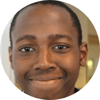

|  |
Ayanda
|
Outside of having had an interest in technology my whole life, the recent years have seen me hone web development skills through various projects assigned by lecturers and tutors that led my part time studies.
Below is a short video showing the skills of analyzing a problem, formulating a solution and improving upon the solution. By the end, I built myself a nice enough web application, using node.js, the Mongo Database and the usual front end files (HTML, CSS and JS).
| Dates | Work |
|---|---|
| 2015-present | CommissionCrowd |
| 2013-2015 | U-14 Soccer Coach, College Student Freelance Writer, Various Jobs(server, manual labor, etc) |